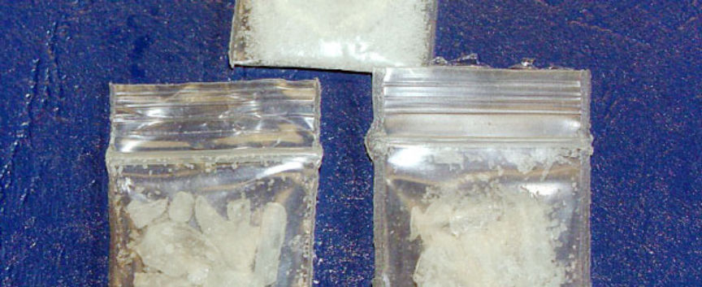
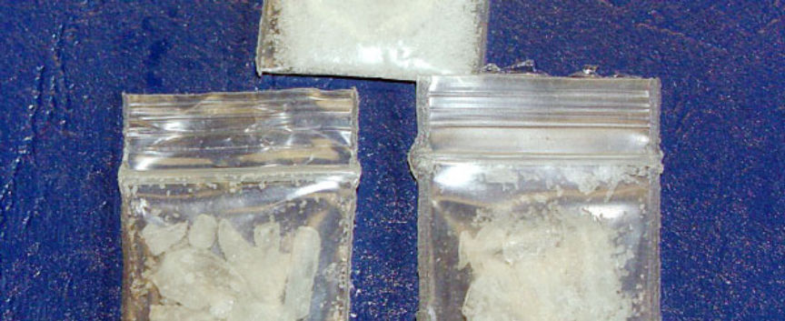

Iowa Man Resold Drugs Purchased on the Dark Web
An Iowa man pleaded guilty to distributing a wide variety of drugs he purchased through the dark web.

According to a press release by the US Attorney's Office for the Northern District of Iowa, from January 2019 to August 2022, 38-year-old Brett Michael Sauser, run a drug trafficking operation for the distribution of methamphetamine, cocaine, fentanyl, ketamine, and MDMA. He acquired the drugs from undisclosed dark web marketplaces and had them delivered to his residence by mail.
Investigators made a controlled delivery of a drug package at Sausers residence in August 2022. The package was reportedly carrying more than 110 grams of methamphetamine. The investigators executed a search warrant on the residence after Sauser accepted the delivery of the package.
The search resulted in the seizure of a total of approximately 10.5 grams of methamphetamine in 3 separate packages, as well as undisclosed quantities of MDMA, heroin, ketamine, LSD, and cannabis. The investigators also found and seized a cannabis plant, three bags of mushroom roots, and material used in the distribution and use of drugs.
On February 10, 2023, Sauser pleaded guilty to one count each of conspiracy to distribute methamphetamine, cocaine, and fentanyl and possession with intent to distribute methamphetamine within a protected location. Sauser resided within 1000 feet of a memorial park and an elementary school.
In pleading guilty, Sauser admitted he participated in the distribution of at least 350 grams of meth and possessed approximately 20 grams each of cocaine, fentanyl, ketamine, and MDMA.
Sauser's sentencing date will be set on an undisclosed date by United States District Court Chief Judge Leonard T. Strand.

Meth packages
According to a press release by the US Attorney's Office for the Northern District of Iowa, from January 2019 to August 2022, 38-year-old Brett Michael Sauser, run a drug trafficking operation for the distribution of methamphetamine, cocaine, fentanyl, ketamine, and MDMA. He acquired the drugs from undisclosed dark web marketplaces and had them delivered to his residence by mail.
Investigators made a controlled delivery of a drug package at Sausers residence in August 2022. The package was reportedly carrying more than 110 grams of methamphetamine. The investigators executed a search warrant on the residence after Sauser accepted the delivery of the package.
The search resulted in the seizure of a total of approximately 10.5 grams of methamphetamine in 3 separate packages, as well as undisclosed quantities of MDMA, heroin, ketamine, LSD, and cannabis. The investigators also found and seized a cannabis plant, three bags of mushroom roots, and material used in the distribution and use of drugs.
On February 10, 2023, Sauser pleaded guilty to one count each of conspiracy to distribute methamphetamine, cocaine, and fentanyl and possession with intent to distribute methamphetamine within a protected location. Sauser resided within 1000 feet of a memorial park and an elementary school.
In pleading guilty, Sauser admitted he participated in the distribution of at least 350 grams of meth and possessed approximately 20 grams each of cocaine, fentanyl, ketamine, and MDMA.
Sauser's sentencing date will be set on an undisclosed date by United States District Court Chief Judge Leonard T. Strand.